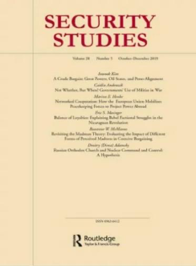

收录于合集

作品简介
【作者】 Tongfi Kim，比利时维萨里大学国际事务助理教授，俄亥俄州立大学政治学博士，主要研究方向为同盟理论与国际安全。
【编译】 王川（国政学人编译员，吉林大学公共外交学院）
【校对】 陈勇
【审核】 周玫琳
【排版】 高佳美
【来源】 Kim, T. (2011). Why alliances entangle but seldom entrap states. Security Studies, 20 (3), 350-377.

期刊简介

《安全研究》（Security Studies）收录并出版具有创新性的学术稿件——无论是理论研究、实践经验分享还是两者兼而有之。安全研究包含广泛的议题，涵盖核扩散、核威慑、军民关系、战略文化、种族冲突、流行病与国家安全、民主政治、外交决策以及定性与多方法研究的发展。根据Journal Citation Reports显示，其2019年的影响因子为2.167。
为何同盟纠缠但很少牵连国家
Why Alliances Entangle But Seldom Entrap States
Tongfi Kim
内容提要
本文解释了同盟条约在避免不利的军事纠缠（military entanglement）上的核心作用。关于同盟的既有文献认为，潜在或实际的盟友主要担心被牵连（entrapment），但既有文献很难给出明确的被牵连案例。对于这一问题，作者提出了两个解释：第一，被牵连这一概念比学者们认为的更为狭窄，更为罕见。第二，领导人会预见到被牵连风险，并在国家缔结同盟前后精心地设计同盟条约。同盟条约可以通过明确同盟义务的性质及其履约条件降低被牵连风险，这并不是什么新的观点，但很少有实证研究支持这一观点。本文解释了同盟成员何时以及如何限制其同盟义务。当国家表现出对被牵连的更多恐惧，抑或拥有更强的讨价还价权力时，其同盟条约会更具条件性。通过对美国与韩国、日本、西班牙缔结的同盟条约进行案例研究，作者检验了这一观点。
文章导读
01
“被牵连”的概念性问题
“被牵连”这一术语最初由迈克尔·曼德尔鲍姆（Michael Mandelbaum）提出，意指同盟里的每一个成员都害怕“被拖入到它不希望参加的战争中”。格伦·斯奈德（Glenn Snyder）使这个概念流行起来，他将“被牵连”定义为“因盟友利益而被拖入到一场与自身利益无关的冲突中”。有学者认为，同盟也会造成政治与经济上的被牵连，本文出于简化的目的，将讨论限定在军事牵连上。
然而，两位学者对“被牵连”的定义过于宽泛。我们需要更精确地定义这一概念以重新理解该词的含义，并区分出不同类型的（非中立的）第三方军事介入。为了代替广义上的牵连概念，作者提出了另一个术语——纠缠（entanglement）。“纠缠”是指一国因同盟关系而被迫在一个成本高昂且获利甚少的行动中援助其盟友的过程。曼德尔鲍姆与斯奈德的牵连概念应当被称为纠缠，牵连是一种不利的纠缠形式，即纠缠国采取了同盟条约中没有明确规定的风险性或进攻性政策。为了从同盟中获益，国家必须接受纠缠带来的一些风险，但不一定会面临被牵连的风险。作者从三个方面对“被牵连”进行了界定：
第一，被牵连必须被视为同盟的独立作用（independent effect）。被牵连国家必须与该国结盟，同盟是导致军事介入的重要原因。换言之，被牵连必须由同盟关系引发。此外，当第三方国家出于己方利益而卷入一场冲突时，这种军事介入不符合纠缠的条件，也就更不符合牵连的定义。
第二，任何形式的被牵连均是不利的，而在某些情况下，纠缠是有利的，因为被纠缠国可以从与盟友关系的改善中获益。
第三，牵连是纠缠的一个子集，它由未事先约定的进攻性或风险性行为引发。除非同盟条约明确规定了何种行为是得到许可的，否则国家可能会滥用同盟条约，而对滥用的恐惧不利于受益型同盟的形成。因此，当国家缔结同盟并就条款进行谈判时，它们会尽量将被牵连的风险最小化。
02
国家通过有条件履行同盟义务而避免被牵连
作者指出，同盟条约的内容是为了避免被牵连，但并不一定是为了避免纠缠。国家会从纠缠的同盟中获益，因而避免所有的纠缠并不可取。国家会精心设计同盟条约，使其既能避免被牵连，同时又不会因完全避免纠缠而降低同盟价值。
从理性主义的视角来说，有两个因素会极大影响同盟条约的设计：第一，当国家表现出对被牵连的强烈恐惧时，它更可能对同盟义务施加条件。第二，相对于其盟友，当国家拥有更强的讨价还价权力时，它更可能对同盟义务施加条件。国家无法控制其盟友，但又可能不得不承受盟友行为的后果，因而国家害怕被牵连。国家通过对同盟义务施加条件，限制其同盟承诺。然而，对被牵连的恐惧只解释了对同盟义务施加条件的背后动机，国家的讨价还价权力则解释了国家施加条件的能力。相比于强国，弱国在很多时候不得不接受被牵连的风险。
当不具备讨价还价权力的国家担心被牵连时，被牵连不一定会发生，但对它们来说，这会产生一个具有极大被牵连风险的同盟条约。如果一国对被牵连的担忧极为强烈，那么同盟对它们来说可能不再那么有吸引力，其讨价还价权力也会增强。此时，只有另一方愿意作出一些让步来降低被牵连风险，同盟才能得以缔结。
作者指出，本文主要关注的是同盟条约的设计，但理论上的分析也适用于因被牵连风险而未缔结同盟的案例。
03
案例研究
本部分检验的美韩、美日、美西三个同盟（六个同盟条约）在解释变量——对被牵连的恐惧与同盟内部的讨价还价权力上有着显著的变化。表一对案例研究进行了总结。在所有案例中，相比于其盟友，美国拥有更强的讨价还价权力，当它害怕被牵连时，会对同盟义务施加更多的条件。当美国的盟友害怕被牵连，同时其讨价还价权力相对较强时，它们会成功地限制其同盟义务与美国的行动自由。当国家不怎么害怕被牵连，抑或害怕被牵连的一方拥有较弱的讨价还价权力时，对同盟义务施加的条件更少。
表一：对被牵连的恐惧、讨价还价权力与对同盟义务施加的条件
04
超越案例
本文的案例均是美国在冷战期间缔结的同盟，因而有学者可能会质疑本文观点的普遍性。但作者强调，对同盟条约数据库（Alliance Treaty Obligations and Provisions, ATOP）的分析表明本文的观点具有广泛的适用性。通过简单的描述性统计（descriptive statistics），我们可以发现对同盟条约施加的条件会因同盟义务的类型而变化，而后者是影响被牵连风险的一个主要因素。
表二（第二行）表明，具有高被牵连风险的进攻义务与中立义务比防御义务和协商义务更有可能被施加条件。同时，它进一步展示了哪些义务以哪个方面作为履约条件，以及同盟成员如何选择特定的条件。例如，75.9%的进攻义务以特定敌人作为履约条件，其比例最高。同时，进攻义务也可能以发生某种特定冲突为履约条件，其比例达到42.5%。

表二：承诺类型与条件（第二行展示的是每项义务在各个方面都被施加条件的百分比）
05
对被牵连的恐惧与同盟政治的未来
本文指出了同盟文献中“被牵连”的概念性问题，并对“纠缠”与“牵连”进行了区分，后者是前者的子集。国家在接受纠缠风险的同时，会精心设计同盟以降低被牵连风险。美韩、美日、美西同盟的案例研究表明，同盟成员会根据自身的讨价还价权力不断地重新设计同盟，以应对被牵连的风险。本文在实证上印证了国家确实会害怕被牵连。正是因为国家对其的恐惧与努力应对，被牵连才很少发生。同时，盟友之间的利益分配并不是平等的，国家会为了在同盟中获得更好的地位而努力讨价还价。更加害怕被抛弃的国家不得不小心谨慎地提出自己的要求。由于国家需要平衡被牵连与被抛弃两种风险，那么它们有时会不得不接受被牵连的风险。
本文的研究具有两点政策含义：第一， 只要条约内容得到精心设计，军事同盟不一定带来很高的被牵连风险。 第二， 目前国际体系的能力分配可能有利于美国，但不利于其他国家。 害怕被牵连并非美国采取更为克制的大战略的好理由。在单极体系下，美国不仅相对其潜在或实际对手具有优势，而且对其潜在或实际的盟友而言也具有优势。凭借其讨价还价的优势，美国可以从修改同盟承诺的内容中获益，但完全放弃同盟承诺是一种错误的政策，因为仅凭这些承诺还不足以将美国拖入一场代价高昂的战争中。此外，同盟承诺还会增强美国对其盟友的影响力和对潜在敌人的威慑力。同时，美国会拥有更多的权力牵连其盟友，而其他国家也有更多的理由接受这种被牵连，以免被唯一的超级盟友抛弃。美国领导人如何以建设性的方式利用其优势，其他国家如何找到可接受的方式来解决其面临的问题，有待于未来的观察。
译者评述
格伦·斯奈德强调在同盟政治中存在“被牵连”与“被抛弃”两个困境，【1】此后大多数关于同盟内部状况的讨论都围绕这两个困境而展开。尽管大多数同盟研究都强调了“被牵连”是同盟中的主要困境之一，但现实中却很少发生“被牵连”的真实案例。本文对这一现象进行了反思。作者首先指出了传统研究中“牵连”这一概念的问题，把牵连的概念范围缩小，将其视为“纠缠”的一种特定形式，并三个方面重新界定了“牵连”。其次，从动机与能力两个方面解释了国家如何在同盟条约中对其义务的履行施加条件以降低被牵连风险，并进行了相关案例研究以支持这一结论。
事实上，同盟的生命周期主要分为同盟建立、同盟维持与同盟管理、同盟瓦解三个阶段。而“被牵连”现象的出现可能只是同盟管理失败的结果。狭义上的同盟管理主要指同盟内部成员国之间对各自承担义务、应对威胁等的分配，主要依据的是同盟条约的具体条款与规定。【2】条约在实现有效的同盟管理中发挥着重要作用。本文就向我们说明了影响同盟义务履约条件设定的两个因素。除同盟条约外，国家进行有效的同盟管理还依赖于哪些因素？这些因素的作用机制是什么？都值得未来进一步的探讨。
本文强调“被牵连”现象是少见的，并不是因为国家不害怕被牵连，而是由于国家通过施加同盟义务的履约条件避免了这一现象。那么是否存在即使国家在条约中施加了履约条件，但仍被盟友牵连的情况？换言之，单纯的条约设置是否可以完全避免国家被牵连呢？本文解释了影响履约条件设置的因素，但似乎并没有对这一问题作出回答。
参考文献：
【1】 Glenn H. Snyder. (1984). The Security Dilemma in Alliance Politics. World Politics, 36 (4), 461-495.
【2】 刘丰：《美国的联盟管理及其对中国的影响》，载《外交评论》，2014年第6期，第90-106页。
文章观点不代表本平台观点，本平台评译分享的文章均出于专业学习之用, 不以任何盈利为目的，内容主要呈现对原文的介绍，原文内容请通过各高校购买的数据库自行下载


好好学习，天天“在看”
国政学人
支持学术公益与知识传播
微信扫一扫赞赏作者 __赞赏
已喜欢，对作者说句悄悄话
取消 __
发送给作者
发送
最多40字，当前共字
上一页 1/3 下一页
长按二维码向我转账
支持学术公益与知识传播
受苹果公司新规定影响，微信 iOS 版的赞赏功能被关闭，可通过二维码转账支持公众号。